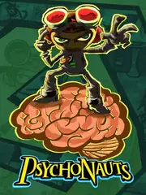

 |
|
| Tiempo de juego | No Jugado |
| Última actividad | Nunca |
| Añadido | 20/11/2025 15:13:47 |
| Modificado | 21/11/2025 14:16:28 |
| Estado de finalización | Not Played |
| Librería | Playnite |
| Fuente | |
| Plataforma | PC (Windows) |
| Fecha de lanzamiento | 19/4/2005 |
| Puntuación de la Comunidad | 84 |
| Puntuación de la Crítica | 85 |
| Puntuación de usuario | |
| Género | Adventure Puzzle |
| Desarrollador | Double Fine Productions |
| Editor | Double Fine Productions Majesco Entertainment THQ Xbox Game Studios |
| Característica | Single Player |
| Enlaces | Official Website Steam GOG |
| Tag | |
¡Esto no es un juego, es un viaje de ida! Literalmente. Es una de esas flasheadas hermosas que solo pueden salir de la cabeza de Tim Schafer (el genio de Grim Fandango y Monkey Island) y su equipo en Double Fine.
A simple vista parece un juego de plataformas 3D "simpático", ¿no? ¡LAS PELOTAS! Es uno de los juegos más creativos, oscuros, graciosos y bizarros que se hicieron jamás. Es como si Tim Burton se hubiera comido un payaso y se pusiera a programar.
Sos Razputin "Raz" Aquato, un pibe que se escapa del circo para colarse en el "Campamento Whispering Rock", un campamento de verano... ¡para niños psíquicos! Tu objetivo: convertirte en un "Psiconauta", un espía de élite con poderes mentales.
Psychonauts es un clásico que demuestra que los videojuegos pueden ser arte, comedia y locura al mismo tiempo. Si nunca entraste en la "Mente del Lechero", no sabés lo que es el gaming bizarro.